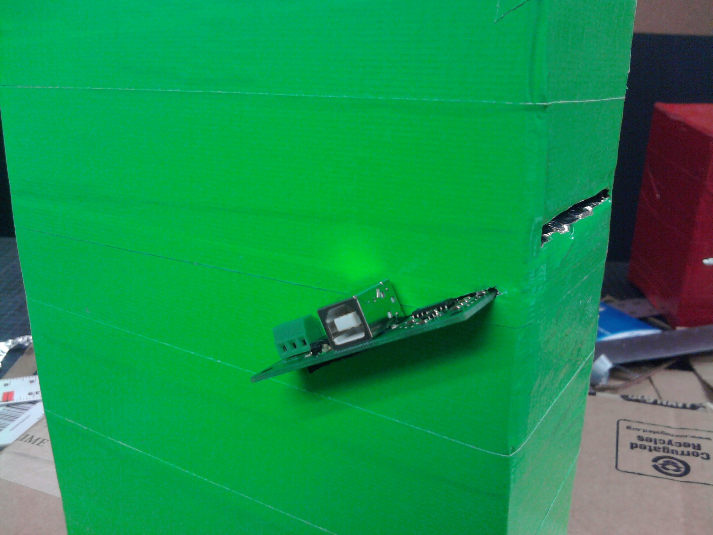

Castle Quest
Castle Quest is a tangible math learning game founded upon a compelling storyline and sensory interactions. Through observations and interviews, we discovered how many students don't have the opportunity to experiment and play with the concepts taught in their math classes. We also uncovered how, to make mundane tasks more interesting, children often overlay rich and imaginative narratives over them. From these findings, Ahmad Shah, Gene Tseng, Frank Chen, and I built Castle Quest. Within my amazing team, I led the UI and UX design, prototype development, and qualitative research.

Imagine asking elementary schoolers if they would rather play or do math problems. It's not hard to imagine what the resounding answer would be. Through interviews and observations at a local after school programs, my team sought to better understand why children found math so loathsome and play so fun.

At the East Palo Alto Quest Learning program, a daily after school program helping kids build their academic skills, we met awesome 3rd to 5th graders who were excited to share their stories with us. From them, we learned that while they like math and saw the value in it, they're often not excited or motivated to do it on their. We watched them quietly go through the motions of completing their homework, struggling to stay focused on the task at hand.
Once done with homework, the kids took out various board and card games and quickly became an excited bunch. We watched how they enthusiastically played these games, using their imaginations to come up with new rules and narratives once a game got boring and their bodies to express their strategies and emotions. We saw how both collaboration and competition drove their engagement to levels unseen during homework time.
In a later session, we worked with the kids to come up with a new math game using a regular deck of cards. With little prompting from us, the kids invented a game similar to Blackjack but which they dubbed "Icebreaker" (to our delight as we definitely wanted to be invited back in the future). Players took turns putting down one card, trying to get opponents to put down the card that summed up the pot to surpass a certain number while avoiding doing so themselves. Once we suggested that going over the target number was like "breaking the ice," the kids started visualizing each card as an ice block being placed on a fragile sheet of ice. Grasping the metaphor, the kids' level of engagement and volume of excitement rose.
The next iteration of our prototype was based in Javascript. While not as engaging as the physical manifestation of the game, having immediate visual feedback made the game easier to learn and follow for players.
Over the next few weeks, we experimented with different feedback mechanisms and metaphors. After tense and long debates, we left it up to fate (coin) and went with the Castle metaphor.

For more robust graphics and auditory stimuli, we decided to continue development of the game in Flash and ActionScript. We got on our hands on some RFID tags and readers and experimented with them for game inputs. Swipes, beeps, and cheers soon filled the East Palo Library! As elated as we were, we knew there still existed a large gap between what the students perceived and the kinesthetics they were afforded to perform.
Recognizing the gap, we decided to mask the RFID reader as a cannon. With cardboard and the fix-it-all magic of unlimited duct tape, we built several casings for the readers.
A dozen duct tape rolls, paper cuts, and disfigured cardboard boxes later, we arrived at a cannon casing prototype that met our functional and likeness-to-reality requirements. It read one inputted RFID tags at a time (even if they were entered in quick succession) and dispensed it where players can quickly reuse them. We soon built a more robust version of it, one that required heavy machinery to assemble and could withstand the fury of elementary schoolers.

In the last few days of the project, we better synched the digital gameplay with the physical by configuring feedback timing and sensory cues. Wanting a more immersive and embodied experience for the players, we decided to have the game screen be projected onto a large wall. We tested and added new game elements such as a high fidelity health bar and end-game screens.

Castle Quest proved to be an immersive math experience that successfully engaged players of all ages and background.